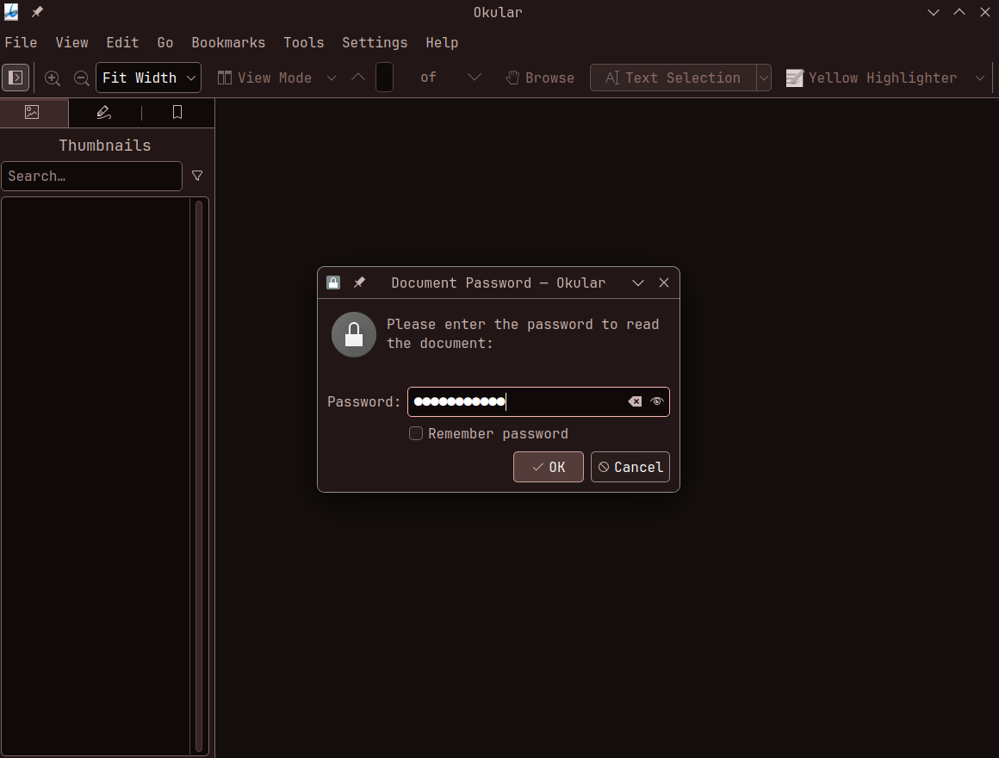
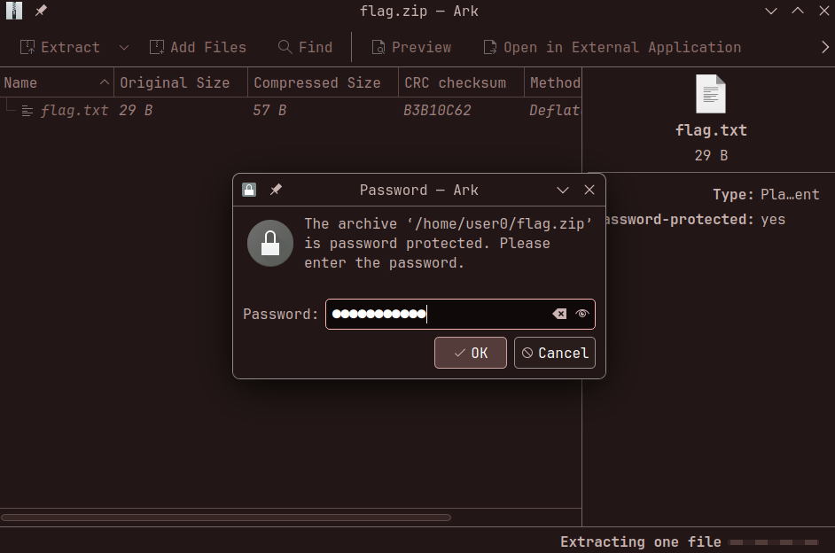
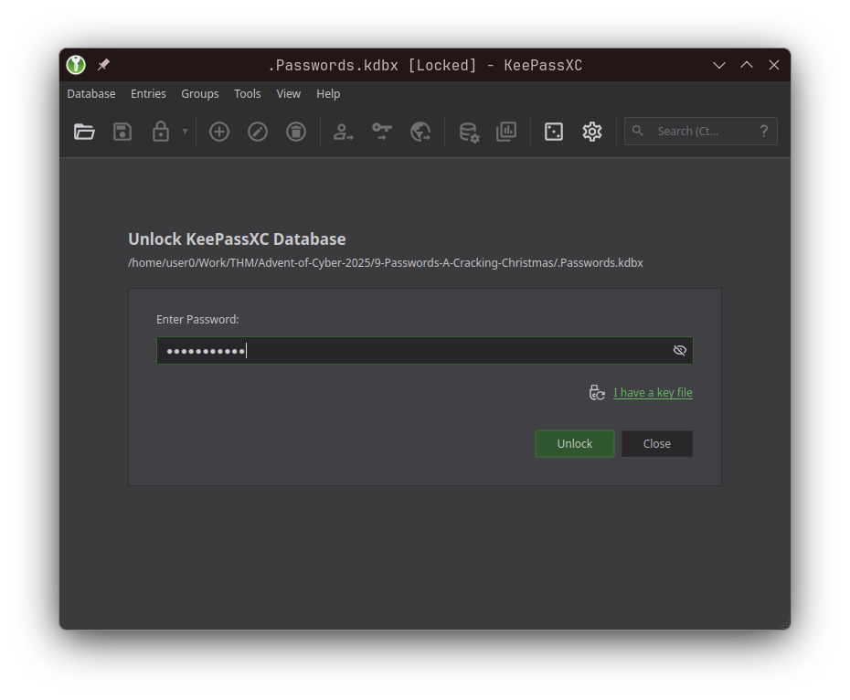
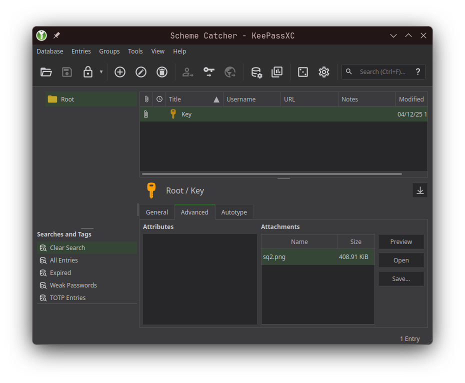

~
❯ ssh ubuntu@10.49.134.126
The authenticity of host '10.49.134.126 (10.49.134.126)' can't be established.
ED25519 key fingerprint is: SHA256:7rAJeIXJUUX4Y5JCc9wqDyTQn3vK6genQi+EmfsVAuA
This key is not known by any other names.
Are you sure you want to continue connecting (yes/no/[fingerprint])? yes
Warning: Permanently added '10.49.134.126' (ED25519) to the list of known hosts.
ubuntu@10.49.134.126's password:
Welcome to Ubuntu 24.04.1 LTS (GNU/Linux 6.14.0-1015-aws x86_64)
* Documentation: https://help.ubuntu.com
* Management: https://landscape.canonical.com
* Support: https://ubuntu.com/pro
System information as of Tue Sep 29 09:15:26 UTC 2026
System load: 0.44 Temperature: -273.1 C
Usage of /: 25.2% of 48.39GB Processes: 214
Memory usage: 27% Users logged in: 0
Swap usage: 0% IPv4 address for ens5: 10.49.134.126
* Ubuntu Pro delivers the most comprehensive open source security and
compliance features.
https://ubuntu.com/aws/pro
Expanded Security Maintenance for Applications is not enabled.
361 updates can be applied immediately.
77 of these updates are standard security updates.
To see these additional updates run: apt list --upgradable
25 additional security updates can be applied with ESM Apps.
Learn more about enabling ESM Apps service at https://ubuntu.com/esm
The list of available updates is more than a week old.
To check for new updates run: sudo apt update
Last login: Tue Nov 11 13:37:04 2025 from 10.13.84.17
ubuntu@tryhackme:~$ ls -la
total 536
drwxr-xr-x 21 ubuntu ubuntu 4096 Sep 29 09:03 .
drwxr-xr-x 3 root root 4096 Oct 22 2024 ..
-rw------- 1 ubuntu ubuntu 419413 Dec 4 2025 .Passwords.kdbx
-rw------- 1 ubuntu ubuntu 549 Sep 29 09:03 .Xauthority
-rw-rw-r-- 1 ubuntu ubuntu 0 Sep 12 2024 .Xresources
-rw-r--r-- 1 ubuntu ubuntu 111 Oct 3 2024 .apport-ignore.xml
lrwxrwxrwx 1 root root 9 Oct 3 2024 .bash_history -> /dev/null
-rw-r--r-- 1 ubuntu ubuntu 220 Feb 25 2020 .bash_logout
-rw-r--r-- 1 ubuntu ubuntu 4007 Oct 16 2025 .bashrc
drwx------ 17 ubuntu ubuntu 4096 Dec 4 2025 .cache
drwx------ 23 ubuntu ubuntu 4096 Dec 4 2025 .config
drwx------ 3 ubuntu ubuntu 4096 Feb 27 2022 .dbus
drwx------ 3 ubuntu ubuntu 4096 Feb 27 2022 .gnupg
drwxrwxr-x 2 ubuntu ubuntu 4096 Feb 27 2022 .icons
drwx------ 2 ubuntu ubuntu 4096 Oct 6 2025 .john
drwx------ 6 ubuntu ubuntu 4096 Sep 1 2024 .local
-rw-r--r-- 1 ubuntu ubuntu 857 Sep 12 2024 .profile
drwx------ 2 ubuntu ubuntu 4096 Oct 22 2024 .ssh
-rw-r--r-- 1 ubuntu ubuntu 0 Oct 3 2024 .sudo_as_admin_successful
drwxrwxr-x 2 ubuntu ubuntu 4096 Feb 27 2022 .themes
-rw------- 1 ubuntu ubuntu 12303 Sep 12 2024 .viminfo
drwxr-xr-x 2 ubuntu ubuntu 4096 Sep 29 09:03 .vnc
-rw-rw-r-- 1 ubuntu ubuntu 246 Oct 16 2025 .wget-hsts
drwxr-xr-x 3 ubuntu ubuntu 4096 Oct 16 2025 Desktop
drwxr-xr-x 2 ubuntu ubuntu 4096 Feb 27 2022 Documents
drwxr-xr-x 2 ubuntu ubuntu 4096 Dec 4 2025 Downloads
drwxr-xr-x 2 ubuntu ubuntu 4096 Feb 27 2022 Music
drwxr-xr-x 2 ubuntu ubuntu 4096 Feb 27 2022 Pictures
drwxr-xr-x 2 ubuntu ubuntu 4096 Feb 27 2022 Public
drwxr-xr-x 2 ubuntu ubuntu 4096 Feb 27 2022 Templates
drwxr-xr-x 2 ubuntu ubuntu 4096 Feb 27 2022 Videos
drwx------ 3 ubuntu ubuntu 4096 Sep 12 2024 snap
ubuntu@tryhackme:~$ cd Desktop/
ubuntu@tryhackme:~/Desktop$ ls -la
total 64
drwxr-xr-x 3 ubuntu ubuntu 4096 Oct 16 2025 .
drwxr-xr-x 21 ubuntu ubuntu 4096 Sep 29 09:03 ..
-rw-r--r-- 1 ubuntu ubuntu 42484 Oct 6 2025 flag.pdf
-rw-r--r-- 1 ubuntu ubuntu 245 Oct 6 2025 flag.zip
drwxrwxr-x 10 ubuntu ubuntu 4096 Oct 16 2025 john
-rwxrwxr-x 1 ubuntu ubuntu 166 Feb 27 2022 mate-terminal.desktop
ubuntu@tryhackme:~/Desktop$ file flag.pdf
flag.pdf: PDF document, version 1.7, 1 page(s)
ubuntu@tryhackme:~/Desktop$ file flag.zip
flag.zip: Zip archive data, at least v2.0 to extract, compression method=AES Encrypted
ubuntu@tryhackme:~/Desktop$ pdfcrack -f flag.pdf -w /usr/share/wordlists/rockyou.txt
PDF version 1.7
Security Handler: Standard
V: 2
R: 3
P: -1060
Length: 128
Encrypted Metadata: True
FileID: 3792b9a3671ef54bbfef57c6fe61ce5d
U: c46529c06b0ee2bab7338e9448d37c3200000000000000000000000000000000
O: 95d0ad7c11b1e7b3804b18a082dda96b4670584d0044ded849950243a8a367ff
found user-password: 'naughtylist'
ubuntu@tryhackme:~/Desktop$ zip2john flag.zip > ziphash.txt
ubuntu@tryhackme:~/Desktop$ john --wordlist=/usr/share/wordlists/rockyou.txt ziphash.txt
Using default input encoding: UTF-8
Loaded 1 password hash (ZIP, WinZip [PBKDF2-SHA1 256/256 AVX2 8x])
Cost 1 (HMAC size [KiB]) is 1 for all loaded hashes
Will run 2 OpenMP threads
Press 'q' or Ctrl-C to abort, 'h' for help, almost any other key for status
winter4ever (flag.zip/flag.txt)
1g 0:00:00:00 DONE (2026-09-29 09:20) 1.351g/s 5535p/s 5535c/s 5535C/s friend..sahara
Use the "--show" option to display all of the cracked passwords reliably
Session completed
ubuntu@tryhackme:~/Desktop$ ls -la
total 68
drwxr-xr-x 3 ubuntu ubuntu 4096 Sep 29 09:20 .
drwxr-xr-x 21 ubuntu ubuntu 4096 Sep 29 09:03 ..
-rw-r--r-- 1 ubuntu ubuntu 42484 Oct 6 2025 flag.pdf
-rw-r--r-- 1 ubuntu ubuntu 245 Oct 6 2025 flag.zip
drwxrwxr-x 10 ubuntu ubuntu 4096 Oct 16 2025 john
-rwxrwxr-x 1 ubuntu ubuntu 166 Feb 27 2022 mate-terminal.desktop
-rw-rw-r-- 1 ubuntu ubuntu 187 Sep 29 09:20 ziphash.txt
~
❯ scp ubuntu@10.49.134.126:~/Desktop/flag.pdf ubuntu@10.49.134.126:~/Desktop/flag.zip ~/Work/THM/Advent-of-Cyber-2025/9-Passwords-A-Cracking-Christmas/
ubuntu@10.49.134.126's password:
flag.pdf 100% 41KB 153.5KB/s 00:00
ubuntu@10.49.134.126's password:
flag.zip


ubuntu@tryhackme:~/Desktop$ cd john
ubuntu@tryhackme:~/Desktop/john$ ls -la
total 156
drwxrwxr-x 10 ubuntu ubuntu 4096 Oct 16 2025 .
drwxr-xr-x 3 ubuntu ubuntu 4096 Sep 29 09:20 ..
drwxrwxr-x 2 ubuntu ubuntu 4096 Oct 16 2025 .ci
drwxrwxr-x 2 ubuntu ubuntu 4096 Oct 16 2025 .circleci
-rw-rw-r-- 1 ubuntu ubuntu 2980 Oct 16 2025 .editorconfig
drwxrwxr-x 8 ubuntu ubuntu 4096 Oct 16 2025 .git
-rw-rw-r-- 1 ubuntu ubuntu 982 Oct 16 2025 .gitattributes
drwxrwxr-x 3 ubuntu ubuntu 4096 Oct 16 2025 .github
-rw-rw-r-- 1 ubuntu ubuntu 1534 Oct 16 2025 .gitignore
-rw-rw-r-- 1 ubuntu ubuntu 2975 Oct 16 2025 .mailmap
-rwxrwxr-x 1 ubuntu ubuntu 3836 Oct 16 2025 .pre-commit.sh
drwxrwxr-x 2 ubuntu ubuntu 4096 Oct 16 2025 .travis
-rw-rw-r-- 1 ubuntu ubuntu 1251 Oct 16 2025 .travis.yml
-rw-rw-r-- 1 ubuntu ubuntu 1654 Oct 16 2025 CONTRIBUTING.md
-rw-rw-r-- 1 ubuntu ubuntu 2332 Oct 16 2025 LICENSE
-rw-rw-r-- 1 ubuntu ubuntu 8124 Oct 16 2025 README.md
drwxrwxr-x 3 ubuntu ubuntu 4096 Oct 16 2025 doc
-rw-rw-r-- 1 ubuntu ubuntu 71 Oct 16 2025 requirements.txt
drwxrwxr-x 10 ubuntu ubuntu 12288 Sep 29 09:20 run
-rw-rw-r-- 1 ubuntu ubuntu 1954 Oct 16 2025 shell.nix
drwxrwxr-x 16 ubuntu ubuntu 61440 Oct 16 2025 src
ubuntu@tryhackme:~/Desktop/john$ cd run
ubuntu@tryhackme:~/Desktop/john/run$ ls -la
total 84732
drwxrwxr-x 10 ubuntu ubuntu 12288 Sep 29 09:20 .
drwxrwxr-x 10 ubuntu ubuntu 4096 Oct 16 2025 ..
-rwxrwxr-x 1 ubuntu ubuntu 11545 Oct 16 2025 1password2john.py
-rwxrwxr-x 1 ubuntu ubuntu 97726 Oct 16 2025 7z2john.pl
-rwxrwxr-x 1 ubuntu ubuntu 26197 Oct 16 2025 DPAPImk2john.py
-rwxrwxr-x 1 ubuntu ubuntu 94504 Oct 16 2025 SIPdump
-rwxrwxr-x 1 ubuntu ubuntu 3800 Oct 16 2025 adxcsouf2john.py
-rwxrwxr-x 1 ubuntu ubuntu 2729 Oct 16 2025 aem2john.py
-rwxrwxr-x 1 ubuntu ubuntu 894 Oct 16 2025 aix2john.pl
-rwxrwxr-x 1 ubuntu ubuntu 1958 Oct 16 2025 aix2john.py
-rw-rw-r-- 1 ubuntu ubuntu 4086722 Oct 16 2025 alnum.chr
-rw-rw-r-- 1 ubuntu ubuntu 4174257 Oct 16 2025 alnumspace.chr
-rw-rw-r-- 1 ubuntu ubuntu 1950539 Oct 16 2025 alpha.chr
-rwxrwxr-x 1 ubuntu ubuntu 1368 Oct 16 2025 andotp2john.py
-rwxrwxr-x 1 ubuntu ubuntu 3455 Oct 16 2025 androidbackup2john.py
-rwxrwxr-x 1 ubuntu ubuntu 7471 Oct 16 2025 androidfde2john.py
-rwxrwxr-x 1 ubuntu ubuntu 1758 Oct 16 2025 ansible2john.py
-rwxrwxr-x 1 ubuntu ubuntu 731 Oct 16 2025 apex2john.py
-rwxrwxr-x 1 ubuntu ubuntu 2140 Oct 16 2025 apop2john.py
-rwxrwxr-x 1 ubuntu ubuntu 2074 Oct 16 2025 applenotes2john.py
-rwxrwxr-x 1 ubuntu ubuntu 1447 Oct 16 2025 aruba2john.py
-rw-rw-r-- 1 ubuntu ubuntu 5720262 Oct 16 2025 ascii.chr
-rwxrwxr-x 1 ubuntu ubuntu 614 Oct 16 2025 atmail2john.pl
-rwxrwxr-x 1 ubuntu ubuntu 1184 Oct 16 2025 authenticator2john.py
-rwxrwxr-x 1 ubuntu ubuntu 6299 Oct 16 2025 axcrypt2john.py
lrwxrwxrwx 1 ubuntu ubuntu 4 Oct 16 2025 base64conv -> john
-rwxrwxr-x 1 ubuntu ubuntu 10577 Oct 16 2025 benchmark-unify
-rwxrwxr-x 1 ubuntu ubuntu 10174 Oct 16 2025 bestcrypt2john.py
-rwxrwxr-x 1 ubuntu ubuntu 2314 Oct 16 2025 bestcryptve2john.py
drwxrwxr-x 2 ubuntu ubuntu 4096 Oct 16 2025 bip-0039
-rwxrwxr-x 1 ubuntu ubuntu 10347 Oct 16 2025 bitcoin2john.py
-rwxrwxr-x 1 ubuntu ubuntu 206112 Oct 16 2025 bitlocker2john
-rwxrwxr-x 1 ubuntu ubuntu 10780 Oct 16 2025 bitlocker2john.py
-rwxrwxr-x 1 ubuntu ubuntu 2725 Oct 16 2025 bitshares2john.py
-rwxrwxr-x 1 ubuntu ubuntu 4315 Oct 16 2025 bitwarden2john.py
-rwxrwxr-x 1 ubuntu ubuntu 7754 Oct 16 2025 bks2john.py
-rwxrwxr-x 1 ubuntu ubuntu 2940 Oct 16 2025 blockchain2john.py
-rwxrwxr-x 1 ubuntu ubuntu 27064 Oct 16 2025 calc_stat
-rwxrwxr-x 1 ubuntu ubuntu 2057 Oct 16 2025 cardano2john.py
-rwxrwxr-x 1 ubuntu ubuntu 26774 Oct 16 2025 ccache2john.py
drwxrwxr-x 2 ubuntu ubuntu 4096 Oct 16 2025 ccl_chrome_indexeddb
-rwxrwxr-x 1 ubuntu ubuntu 7054 Oct 16 2025 cisco2john.pl
-rwxrwxr-x 1 ubuntu ubuntu 898 Oct 16 2025 codepage.pl
-rwxrwxr-x 1 ubuntu ubuntu 2830 Oct 16 2025 coinomi2john.py
-rwxrwxr-x 1 ubuntu ubuntu 106648 Oct 16 2025 cprepair
-rwxrwxr-x 1 ubuntu ubuntu 880 Oct 16 2025 cracf2john.py
-rwxrwxr-x 1 ubuntu ubuntu 2573 Oct 16 2025 dashlane2john.py
-rwxrwxr-x 1 ubuntu ubuntu 3771 Oct 16 2025 deepsound2john.py
-rw-rw-r-- 1 ubuntu ubuntu 4099 Oct 16 2025 dictionary.rfc2865
-rw-rw-r-- 1 ubuntu ubuntu 465097 Oct 16 2025 digits.chr
-rwxrwxr-x 1 ubuntu ubuntu 7341 Oct 16 2025 diskcryptor2john.py
-rwxrwxr-x 1 ubuntu ubuntu 73832 Oct 16 2025 dmg2john
-rwxrwxr-x 1 ubuntu ubuntu 5249 Oct 16 2025 dmg2john.py
drwxrwxr-x 2 ubuntu ubuntu 4096 Oct 16 2025 dns
-rw-rw-r-- 1 ubuntu ubuntu 54555 Oct 16 2025 dumb16.conf
-rw-rw-r-- 1 ubuntu ubuntu 109149 Oct 16 2025 dumb32.conf
-rw-rw-r-- 1 ubuntu ubuntu 60347 Oct 16 2025 dynamic.conf
-rw-rw-r-- 1 ubuntu ubuntu 8539 Oct 16 2025 dynamic_disabled.conf
-rw-rw-r-- 1 ubuntu ubuntu 9542 Oct 16 2025 dynamic_flat_sse_formats.conf
-rwxrwxr-x 1 ubuntu ubuntu 43224 Oct 16 2025 eapmd5tojohn
-rwxrwxr-x 1 ubuntu ubuntu 2053 Oct 16 2025 ecryptfs2john.py
-rwxrwxr-x 1 ubuntu ubuntu 5081 Oct 16 2025 ejabberd2john.py
-rwxrwxr-x 1 ubuntu ubuntu 9523 Oct 16 2025 electrum2john.py
-rwxrwxr-x 1 ubuntu ubuntu 3625 Oct 16 2025 encdatavault2john.py
-rwxrwxr-x 1 ubuntu ubuntu 2717 Oct 16 2025 encfs2john.py
-rwxrwxr-x 1 ubuntu ubuntu 1107 Oct 16 2025 enpass2john.py
-rwxrwxr-x 1 ubuntu ubuntu 1113 Oct 16 2025 enpass5tojohn.py
-rwxrwxr-x 1 ubuntu ubuntu 3773 Oct 16 2025 ethereum2john.py
-rwxrwxr-x 1 ubuntu ubuntu 1725 Oct 16 2025 filezilla2john.py
-rw-rw-r-- 1 ubuntu ubuntu 99202 Oct 16 2025 fuzz.dic
-rwxrwxr-x 1 ubuntu ubuntu 3324 Oct 16 2025 fuzz_option.pl
-rw-rw-r-- 1 ubuntu ubuntu 8910 Oct 16 2025 fvde2john.py
-rwxrwxr-x 1 ubuntu ubuntu 3439 Oct 16 2025 geli2john.py
-rwxrwxr-x 1 ubuntu ubuntu 1867 Oct 16 2025 genincstats.rb
-rwxrwxr-x 1 ubuntu ubuntu 190320 Oct 16 2025 genmkvpwd
-rwxrwxr-x 1 ubuntu ubuntu 2356 Oct 16 2025 gitea2john.py
lrwxrwxrwx 1 ubuntu ubuntu 4 Oct 16 2025 gpg2john -> john
-rwxrwxr-x 1 ubuntu ubuntu 62472 Oct 16 2025 hccap2john
-rwxrwxr-x 1 ubuntu ubuntu 7096 Oct 16 2025 hccapx2john.py
-rwxrwxr-x 1 ubuntu ubuntu 428 Oct 16 2025 hextoraw.pl
-rwxrwxr-x 1 ubuntu ubuntu 1059 Oct 16 2025 htdigest2john.py
-rw-rw-r-- 1 ubuntu ubuntu 7536 Oct 16 2025 hybrid.conf
-rwxrwxr-x 1 ubuntu ubuntu 1458 Oct 16 2025 ibmiscanner2john.py
-rwxrwxr-x 1 ubuntu ubuntu 710 Oct 16 2025 ikescan2john.py
-rwxrwxr-x 1 ubuntu ubuntu 1626 Oct 16 2025 ios7tojohn.pl
-rwxrwxr-x 1 ubuntu ubuntu 5715 Oct 16 2025 itunes_backup2john.pl
-rwxrwxr-x 1 ubuntu ubuntu 4810 Oct 16 2025 iwork2john.py
-rwxrwxr-x 1 ubuntu ubuntu 24477128 Oct 16 2025 john
-rw-rw-r-- 1 ubuntu ubuntu 33024 Oct 16 2025 john.bash_completion
-rw-rw-r-- 1 ubuntu ubuntu 127476 Oct 16 2025 john.conf
-rw------- 1 ubuntu ubuntu 3187 Sep 29 09:20 john.log
-rw------- 1 ubuntu ubuntu 154 Sep 29 09:20 john.pot
-rw-rw-r-- 1 ubuntu ubuntu 8928 Oct 16 2025 john.zsh_completion
-rw-rw-r-- 1 ubuntu ubuntu 35525 Oct 16 2025 jtr_rulez.pm
-rw-rw-r-- 1 ubuntu ubuntu 3620 Oct 16 2025 jtrconf.pm
-rwxrwxr-x 1 ubuntu ubuntu 1110 Oct 16 2025 kdcdump2john.py
-rwxrwxr-x 1 ubuntu ubuntu 291112 Oct 16 2025 keepass2john
-rwxrwxr-x 1 ubuntu ubuntu 11994 Oct 16 2025 keplr2john.py
-rwxrwxr-x 1 ubuntu ubuntu 2955 Oct 16 2025 keychain2john.py
-rwxrwxr-x 1 ubuntu ubuntu 3534 Oct 16 2025 keyring2john.py
-rwxrwxr-x 1 ubuntu ubuntu 5416 Oct 16 2025 keystore2john.py
-rwxrwxr-x 1 ubuntu ubuntu 2643 Oct 16 2025 kirbi2john.py
-rwxrwxr-x 1 ubuntu ubuntu 849 Oct 16 2025 known_hosts2john.py
-rw-rw-r-- 1 ubuntu ubuntu 22635 Oct 16 2025 korelogic.conf
-rwxrwxr-x 1 ubuntu ubuntu 9677 Oct 16 2025 krb2john.py
-rwxrwxr-x 1 ubuntu ubuntu 4551 Oct 16 2025 kwallet2john.py
-rw-rw-r-- 1 ubuntu ubuntu 1466791 Oct 16 2025 lanman.chr
-rwxrwxr-x 1 ubuntu ubuntu 4297 Oct 16 2025 lastpass2john.py
-rw-rw-r-- 1 ubuntu ubuntu 7449800 Oct 16 2025 latin1.chr
-rwxrwxr-x 1 ubuntu ubuntu 472 Oct 16 2025 ldif2john.pl
-rwxrwxr-x 1 ubuntu ubuntu 2628 Oct 16 2025 leet.pl
drwxrwxr-x 2 ubuntu ubuntu 4096 Oct 16 2025 lib
-rwxrwxr-x 1 ubuntu ubuntu 7228 Oct 16 2025 libreoffice2john.py
-rwxrwxr-x 1 ubuntu ubuntu 878 Oct 16 2025 lion2john-alt.pl
-rwxrwxr-x 1 ubuntu ubuntu 994 Oct 16 2025 lion2john.pl
-rw-rw-r-- 1 ubuntu ubuntu 1184244 Oct 16 2025 lm_ascii.chr
-rwxrwxr-x 1 ubuntu ubuntu 1525 Oct 16 2025 lotus2john.py
-rw-rw-r-- 1 ubuntu ubuntu 1161863 Oct 16 2025 lower.chr
-rw-rw-r-- 1 ubuntu ubuntu 2464980 Oct 16 2025 lowernum.chr
-rw-rw-r-- 1 ubuntu ubuntu 1209621 Oct 16 2025 lowerspace.chr
-rwxrwxr-x 1 ubuntu ubuntu 4590 Oct 16 2025 luks2john.py
-rwxrwxr-x 1 ubuntu ubuntu 2602 Oct 16 2025 mac2john-alt.py
-rwxrwxr-x 1 ubuntu ubuntu 24611 Oct 16 2025 mac2john.py
-rwxrwxr-x 1 ubuntu ubuntu 1432 Oct 16 2025 mailer
-rwxrwxr-x 1 ubuntu ubuntu 842 Oct 16 2025 makechr
-rwxrwxr-x 1 ubuntu ubuntu 2297 Oct 16 2025 mcafee_epo2john.py
-rwxrwxr-x 1 ubuntu ubuntu 26536 Oct 16 2025 mkvcalcproba
-rwxrwxr-x 1 ubuntu ubuntu 1221 Oct 16 2025 monero2john.py
-rwxrwxr-x 1 ubuntu ubuntu 2495 Oct 16 2025 money2john.py
-rw-rw-r-- 1 ubuntu ubuntu 3015 Oct 16 2025 mongodb2john.js
-rwxrwxr-x 1 ubuntu ubuntu 6267 Oct 16 2025 mosquitto2john.py
-rwxrwxr-x 1 ubuntu ubuntu 2578 Oct 16 2025 mozilla2john.py
-rwxrwxr-x 1 ubuntu ubuntu 5440 Oct 16 2025 multibit2john.py
-rwxrwxr-x 1 ubuntu ubuntu 942 Oct 16 2025 neo2john.py
-rwxrwxr-x 1 ubuntu ubuntu 9676 Oct 16 2025 netntlm.pl
-rwxrwxr-x 1 ubuntu ubuntu 5186 Oct 16 2025 netscreen.py
-rwxrwxr-x 1 ubuntu ubuntu 11395 Oct 16 2025 network2john.lua
-rwxrwxr-x 1 ubuntu ubuntu 133905 Oct 16 2025 office2john.py
-rwxrwxr-x 1 ubuntu ubuntu 3254 Oct 16 2025 openbsd_softraid2john.py
drwxrwxr-x 4 ubuntu ubuntu 12288 Oct 16 2025 opencl
-rwxrwxr-x 1 ubuntu ubuntu 3911 Oct 16 2025 openssl2john.py
-rwxrwxr-x 1 ubuntu ubuntu 3973 Oct 16 2025 oracle2john.py
-rwxrwxr-x 1 ubuntu ubuntu 2046 Oct 16 2025 oubliette2john.py
-rwxrwxr-x 1 ubuntu ubuntu 2844 Oct 16 2025 padlock2john.py
-rwxrwxr-x 1 ubuntu ubuntu 203600 Oct 16 2025 pass_gen.pl
-rw-rw-r-- 1 ubuntu ubuntu 15327454 Oct 16 2025 password.lst
-rwxrwxr-x 1 ubuntu ubuntu 57592 Oct 16 2025 pcap2john.py
-rwxrwxr-x 1 ubuntu ubuntu 59808 Oct 16 2025 pdf2john.pl
-rwxrwxr-x 1 ubuntu ubuntu 4891 Oct 16 2025 pdf2john.py
-rwxrwxr-x 1 ubuntu ubuntu 4901 Oct 16 2025 pem2john.py
-rwxrwxr-x 1 ubuntu ubuntu 3329 Oct 16 2025 pfx2john.py
-rwxrwxr-x 1 ubuntu ubuntu 9861 Oct 16 2025 pgpdisk2john.py
-rwxrwxr-x 1 ubuntu ubuntu 2751 Oct 16 2025 pgpsda2john.py
-rwxrwxr-x 1 ubuntu ubuntu 9647 Oct 16 2025 pgpwde2john.py
-rw-rw-r-- 1 ubuntu ubuntu 6305 Oct 16 2025 pkcs12kdf.py
-rwxrwxr-x 1 ubuntu ubuntu 4198 Oct 16 2025 potcheck.pl
-rwxrwxr-x 1 ubuntu ubuntu 1462 Oct 16 2025 prosody2john.py
drwxrwxr-x 2 ubuntu ubuntu 4096 Oct 16 2025 protobuf
-rwxrwxr-x 1 ubuntu ubuntu 1438 Oct 16 2025 ps_token2john.py
-rwxrwxr-x 1 ubuntu ubuntu 2480 Oct 16 2025 pse2john.py
-rwxrwxr-x 1 ubuntu ubuntu 61656 Oct 16 2025 putty2john
-rwxrwxr-x 1 ubuntu ubuntu 1686 Oct 16 2025 pwsafe2john.py
-rwxrwxr-x 1 ubuntu ubuntu 43408 Oct 16 2025 racf2john
-rwxrwxr-x 1 ubuntu ubuntu 7165 Oct 16 2025 radius2john.pl
-rwxrwxr-x 1 ubuntu ubuntu 5926 Oct 16 2025 radius2john.py
lrwxrwxrwx 1 ubuntu ubuntu 4 Oct 16 2025 rar2john -> john
-rwxrwxr-x 1 ubuntu ubuntu 34824 Oct 16 2025 raw2dyna
-rw-rw-r-- 1 ubuntu ubuntu 5712 Oct 16 2025 regex_alphabets.conf
-rwxrwxr-x 1 ubuntu ubuntu 8377 Oct 16 2025 relbench
-rw-rw-r-- 1 ubuntu ubuntu 54154 Oct 16 2025 repeats16.conf
-rw-rw-r-- 1 ubuntu ubuntu 108843 Oct 16 2025 repeats32.conf
-rwxrwxr-x 1 ubuntu ubuntu 1606 Oct 16 2025 restic2john.py
-rwxrwxr-x 1 ubuntu ubuntu 16427 Oct 16 2025 rexgen2rules.pl
drwxrwxr-x 2 ubuntu ubuntu 4096 Oct 16 2025 rules
-rw-rw-r-- 1 ubuntu ubuntu 107926 Oct 16 2025 rules-by-rate.conf
-rw-rw-r-- 1 ubuntu ubuntu 107977 Oct 16 2025 rules-by-score.conf
-rwxrwxr-x 1 ubuntu ubuntu 2363 Oct 16 2025 rulestack.pl
-rwxrwxr-x 1 ubuntu ubuntu 9541 Oct 16 2025 sap2john.pl
-rwxrwxr-x 1 ubuntu ubuntu 1234 Oct 16 2025 sense2john.py
-rwxrwxr-x 1 ubuntu ubuntu 544 Oct 16 2025 sha-dump.pl
-rwxrwxr-x 1 ubuntu ubuntu 510 Oct 16 2025 sha-test.pl
-rwxrwxr-x 1 ubuntu ubuntu 20433 Oct 16 2025 signal2john.py
-rwxrwxr-x 1 ubuntu ubuntu 899 Oct 16 2025 sipdump2john.py
-rwxrwxr-x 1 ubuntu ubuntu 10005 Oct 16 2025 ssh2john.py
-rwxrwxr-x 1 ubuntu ubuntu 25114 Oct 16 2025 sspr2john.py
-rwxrwxr-x 1 ubuntu ubuntu 3814 Oct 16 2025 staroffice2john.py
-rw-rw-r-- 1 ubuntu ubuntu 107571 Oct 16 2025 stats
-rwxrwxr-x 1 ubuntu ubuntu 760 Oct 16 2025 strip2john.py
-rwxrwxr-x 1 ubuntu ubuntu 15588 Oct 16 2025 telegram2john.py
-rw-rw-r-- 1 ubuntu ubuntu 20198 Oct 16 2025 test_tezos2john.py
-rwxrwxr-x 1 ubuntu ubuntu 11581 Oct 16 2025 tezos2john.py
-rwxrwxr-x 1 ubuntu ubuntu 36760 Oct 16 2025 tgtsnarf
-rwxrwxr-x 1 ubuntu ubuntu 2769 Oct 16 2025 tokenize.pl
-rwxrwxr-x 1 ubuntu ubuntu 3238 Oct 16 2025 truecrypt2john.py
-rwxrwxr-x 1 ubuntu ubuntu 75304 Oct 16 2025 uaf2john
lrwxrwxrwx 1 ubuntu ubuntu 4 Oct 16 2025 unafs -> john
lrwxrwxrwx 1 ubuntu ubuntu 4 Oct 16 2025 undrop -> john
lrwxrwxrwx 1 ubuntu ubuntu 4 Oct 16 2025 unique -> john
-rw-rw-r-- 1 ubuntu ubuntu 21798 Oct 16 2025 unisubst.conf
-rwxrwxr-x 1 ubuntu ubuntu 1087 Oct 16 2025 unrule.pl
lrwxrwxrwx 1 ubuntu ubuntu 4 Oct 16 2025 unshadow -> john
-rw-rw-r-- 1 ubuntu ubuntu 668568 Oct 16 2025 upper.chr
-rw-rw-r-- 1 ubuntu ubuntu 1220961 Oct 16 2025 uppernum.chr
-rw-rw-r-- 1 ubuntu ubuntu 9286825 Oct 16 2025 utf8.chr
-rwxrwxr-x 1 ubuntu ubuntu 2250 Oct 16 2025 vdi2john.pl
-rwxrwxr-x 1 ubuntu ubuntu 2185 Oct 16 2025 vmx2john.py
-rwxrwxr-x 1 ubuntu ubuntu 42184 Oct 16 2025 vncpcap2john
-rwxrwxr-x 1 ubuntu ubuntu 228904 Oct 16 2025 wpapcap2john
-rwxrwxr-x 1 ubuntu ubuntu 4576 Oct 16 2025 zed2john.py
lrwxrwxrwx 1 ubuntu ubuntu 4 Oct 16 2025 zip2john -> john
drwxrwxr-x 2 ubuntu ubuntu 4096 Oct 16 2025 ztex
ubuntu@tryhackme:~/Desktop/john/run$ ./keepass2john ~/.Passwords.kdbx > ~/Desktop/hash.txt
ubuntu@tryhackme:~/Desktop/john/run$ cd ~/Desktop
ubuntu@tryhackme:~/Desktop$ john --wordlist=/usr/share/wordlists/rockyou.txt hash.txt
Using default input encoding: UTF-8
Loaded 1 password hash (KeePass [AES/Argon2 256/256 AVX2])
Cost 1 (t (rounds)) is 20 for all loaded hashes
Cost 2 (m) is 65536 for all loaded hashes
Cost 3 (p) is 2 for all loaded hashes
Cost 4 (KDF [0=Argon2d 2=Argon2id 3=AES]) is 0 for all loaded hashes
Will run 2 OpenMP threads
Note: Passwords longer than 41 [worst case UTF-8] to 124 [ASCII] rejected
Press 'q' or Ctrl-C to abort, 'h' for help, almost any other key for status
Failed to use huge pages (not pre-allocated via sysctl? that's fine)
harrypotter (.Passwords)
1g 0:00:01:09 DONE (2026-09-29 09:50) 0.01429g/s 1.372p/s 1.372c/s 1.372C/s harrypotter..ihateyou
Use the "--show" option to display all of the cracked passwords reliably
Session completed
~
❯ scp ubuntu@10.49.134.126:~/.Passwords.kdbx /home/user0/Work/THM/Advent-of-Cyber-2025/9-Passwords-A-Cracking-Christmas/
ubuntu@10.49.134.126's password:
.Passwords.kdbx 100% 410KB 567.1KB/s 00:00
~/Work/THM/Advent-of-Cyber-2025/9-Passwords-A-Cracking-Christmas
❯ keepassxc

